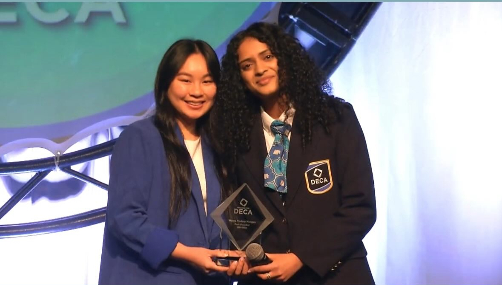
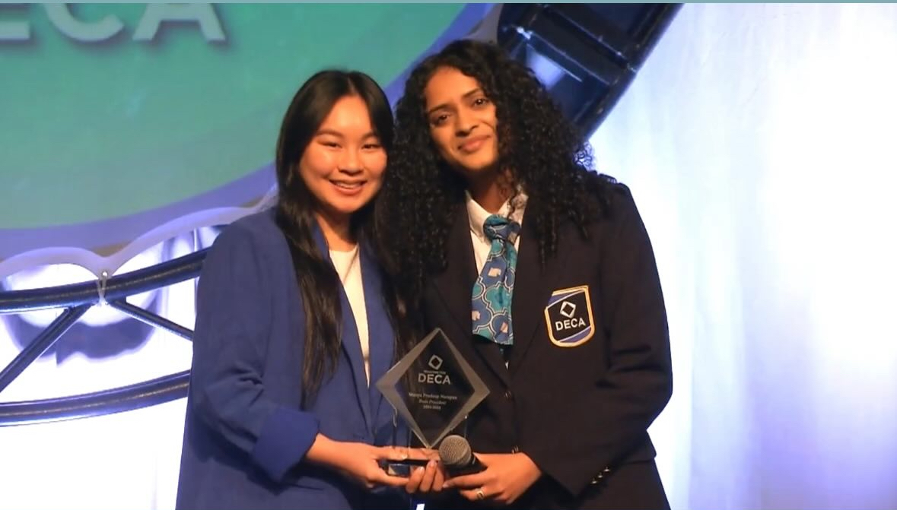

Studying Computer Science @ Cornell University
Chapter One
About Me
I'm a Computer Science student at Cornell University with a passion for using technology to expand access, equity, and opportunity. My work often sits at the intersection of tech, education, and social impact — whether building tools to support underserved students, designing inclusive learning experiences, or empowering young girls to explore STEM through programs like Girls Who Code.
I'm especially interested in how thoughtful design and human-centered computing can make technology more equitable. Previously, I've led initiatives focused on accessible tech education, spoken on panels about diversity in STEM, and developed digital resources to help level the playing field for students across Washington State.
When I'm not writing code, you'll find me reading (this website, in fact, is inspired by my first favorite piece of technology, a Kindle Paperwhite), exploring new coffee shops, or spending time with friends and family.
Chapter Two
Things I've Done
Over the past few years, I've been lucky to learn, lead, and build alongside some incredible communities. A few chapters from that journey:
Cornell University
University life has given me the chance to dive into communities that challenge me, inspire me, and help me grow as both a technologist and a collaborator.
- Developer · Engineers Without Borders — building tools and solutions that create real impact for communities around me.
- Developer · Women in Computing Technical Committee — creating resources and internal tools that support an inclusive tech community.
- Analyst · Cornell Data Journal Check out our work! — exploring data-driven storytelling and research.
- Member · Kappa Theta Pi — Cornell’s professional tech fraternity, where I’ve found mentorship, leadership opportunities, and a tight-knit support network.
- Mentor · Girls Who Code — helping younger students discover the confidence and creativity that comes with learning to code.
Washington DECA
My journey with Washington DECA has been one of my most meaningful leadership experiences.
- State President — represented 16,000+ students studying business, marketing, and entrepreneurship across Washington. Guided a 12-member executive team and helped launch 20+ statewide initiatives, from professional clothing scholarships to an AI-powered test prep chatbot that improved member test performance.
- Board of Directors — served as the first high school student appointed to Washington DECA’s Board, contributing to long-term strategy development.
- Area 3 President & VP of Career Development — represented the largest DECA Area in the state (2,000+ students), visited chapters, led social media outreach, and helped organize conferences that brought thousands of students together.
- Innovation & Advocacy — founded a 16-person team that created a statewide leadership resource hub used by 165+ schools, earning international recognition with the Innovation IMPACT Award. Developed advocacy booths connecting 300+ student stories with state legislators to advocate for increased CTE funding.
 

Girls Who Code @ Eastlake High School
Girls Who Code @ Eastlake gave me a front-row seat to what happens when you create space for students to truly belong in tech.
- Co-led a 100+ member chapter — organized bi-weekly workshops and events focused on building skills and confidence.
- Expanded membership by 35% by centering inclusivity, accessibility, and community in everything we did.
- Founded Girls Who Code Jr. — designed monthly workshops (with a volunteer team) to introduce elementary students to coding in fun, empowering ways.
STEAMobile
STEAMobile is a female-led STEAM education nonprofit I co-founded to make hands-on STEAM learning more accessible.
- Built the organization from the ground up — from shaping the business plan to designing the brand and curriculum.
- Hosted camps and community workshops that centered curiosity, creativity, and confidence in STEAM.
- Partnered with organizations such as the Bellevue Collection to bring engaging STEM experiences to hundreds of K–8 students.
Data Structures Teaching Assistant
Teaching has always been one of my favorite ways to deepen my own understanding.
- Data Structures TA for my high school course — supported peers one-on-one with challenging concepts, labs, and projects.
- Mentorship & communication — reinforced my passion for breaking down complex ideas in approachable, encouraging ways.
Chapter Three
Things I've Worked On
Project 01
LessonLoop
Contributing to an AI-powered professional learning platform that boosts student engagement by helping educators identify barriers and apply effective instructional strategies. Implementing prototypes using Vue, Nuxt, DynamoDB, Node, and Amazon Bedrock for AI agent deployment.
View Project →Project 02
Ocean Wave Pomodoro Timer
A Chrome extension that helps users stay focused and productive using the Pomodoro Technique. Built with React.js, featuring customizable work/rest intervals and session tracking.
View Project →Project 03
The Myth of the Undefeated Boxer
Analyzing boxing trends across decades to explore the evolution of the sport and identify what defines greatness in boxing through comprehensive data analysis and visualization.
View Project →Project 04
Sudoku Solver
A Python program that solves Sudoku puzzles of different sizes using recursive backtracking. Uses sets to track valid row, column, and square values with efficient constraint checks.
Epilogue